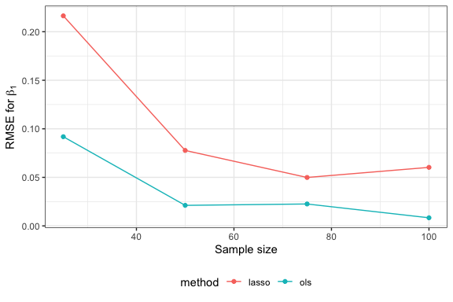

Introduction to `simulatr`
intro-to-simulatr.RmdHere we introduce the data structures on which simulatr
is based and walk through a simple example of using these to set up a
numerical simulation.
Simulation structure and workflow
The conceptual structure of a numerical simulation
A numerical simulation consists of generating B data
realizations (or data sets) from one or more data-generating
distributions, and then applying one or more analysis methods to each
data set. The data-generating distributions are specified by problem
parameters. Each combination of parameters, called a problem
setting, gives rise to a data-generating distribution.
simulatr specifier objects
In simulatr, the aforementioned components are all
captured by a simulatr specifier object. This
object has four fields, which are described below:
-
parameter_grid: A data frame whose rows correspond to problem settings and whose columns are parameters. -
fixed_parameters: A list of parameters that is applicable to each problem setting. One special fixed parameter isB, the number of data realizations to generate per problem setting. -
generate_data_function: A function that takes as input the problem parameters and outputs either (1) one data set or (2)Bdata sets. The latter option is useful in cases where all data sets are faster to generate together rather than one at a time. -
run_method_functions: A named list of method functions. A method function takes as input either (1) one data set or (2)Bdata sets and outputs a data frame with at least three columns:parameter,target, andvalue. In case 2, there is a fourth column calledrun_idcorresponding to the data realization. In a variable selection context,parameterwould store the variable being tested,targetwould be the string “p-value”, andvaluewould be the p-value for that variable.
simulatr workflow
Assemble simulation components. First, assemble the four objects described in the previous section.
-
Create a
simulatrspecifier object. Given the four simulation components, create asimulatrspecifier object using thesimulatr_specifier()function:simulatr_spec <- simulatr_specifier( parameter_grid, fixed_parameters, generate_data_function, run_method_functions ) -
Check and, if necessary, update the
simulatrspecifier object. Make sure that all parts of yoursimulatrspecifier object are working by running a small portion of your simulation via thecheck_simulatr_specifier_object()function. This function takes as arguments thesimulatrspecifier object (simulatr_spec) as well as the number of data realizations to try (B_in). For checking purposes, you can use a small number forB_inlike 2 or 3.check_results <- check_simulatr_specifier_object(simulatr_spec, B_in = 3)If there are any errors,
simulatrwill give informative error messages that will help you identify the problem. Update thesimulatrspecifier object to fix any issues. -
Run the simulation. There are two options for running a numerical simulation with
simulatr. You can runsimulatreither (1) usingRStudioor (2) using thesimulatrpipeline, a Nextflow pipeline intended for distributed computing platforms. Option 1, good for small-scale simulations, can be done using thecheck_simulatr_specifier_object()function from step 3, omitting theB_inargument:simulation_results <- check_simulatr_specifier_object(simulatr_spec)Option 2, good for large-scale simulations, is currently available but not yet documented.
Summarize and / or visualize the results. Once you have the output of each method on each realization of each data set, you can summarize the results by computing quantities like Type-I error, mean-squared error, etc.
Example simulation with simulatr
Let’s walk through the above workflow on a simple example. We consider estimating the coefficients in a linear regression model via ordinary least squares and lasso, varying the number of samples.
1. Assemble simulation components
-
parameter_grid. The problem parameters will be the sample sizen, the dimensionp, the number of nonzero coefficientss, and the value of each nonzero coefficientbeta_val. In this simulation, we will only varyn. We could have therefore put the remainder of the parameters infixed_parameters, but we avoid this to have all problem parameters inparameter_grid.parameter_grid <- data.frame( n = c(25, 50, 75, 100), # sample size p = 15, # dimension s = 5, # number of nonzero coefficients beta_val = 3 # value of nonzero coefficients ) -
fixed_parameters. Here we put only the number of data realizationsBand the seed to set for the simulation.fixed_parameters <- list( B = 10, # number of data realizations seed = 4, # seed to set prior to generating data and running methods n_processors = 1 # necessary argument, but ignore for now ) -
generate_data_function. We define the data-generation function as follows:# define data-generating model based on the Gaussian linear model generate_data_f <- function(n, p, s, beta_val){ X <- matrix(rnorm(n*p), n, p, dimnames = list(NULL, paste0("X", 1:p))) beta <- numeric(p) beta[1:s] <- beta_val y <- X %*% beta + rnorm(n) data <- list(X = X, y = y) data }Additionally, we need to call
simulatr_function()to add a few pieces of information thatsimulatrneeds. In particular, we have to give it the argument names of the data-generating function (typically obtained usingformalArgs(generate_data_f), as below). We also have to letsimulatrknow whether the data-generating function creates just one realization of the data (loop = TRUE) or allBat the same time (loop = FALSE).# need to call simulatr_function() to give simulatr a few more pieces of info generate_data_function <- simulatr_function( f = generate_data_f, arg_names = formalArgs(generate_data_f), loop = TRUE ) -
run_method_functions. Let’s define functions for OLS and lasso:# ordinary least squares ols_f <- function(data){ X <- data$X y <- data$y lm_fit <- lm(y ~ X - 1) beta_hat <- coef(lm_fit) results <- dplyr::tibble( parameter = colnames(X), target = "estimate", value = unname(beta_hat)) results } # lasso lasso_f <- function(data){ X <- data$X y <- data$y glmnet_fit <- glmnet::cv.glmnet(x = X, y = y, nfolds = 5, intercept = FALSE) beta_hat <- glmnet::coef.glmnet(glmnet_fit, s = "lambda.1se") results <- dplyr::tibble( parameter = colnames(X), target = "estimate", value = beta_hat[-1]) results }Again, we need to call
simulatr_function()to add a few pieces of information thatsimulatrneeds. This time, we need to give it all arguments to the method functions except the first (the data itself), which usually will be empty. We also have to letsimulatrknow whether the method functions input just one realization of the data (loop = TRUE) or allBat the same time (loop = FALSE).# create simulatr functions ols_spec_f <- simulatr_function(f = ols_f, arg_names = character(0), loop = TRUE) lasso_spec_f <- simulatr_function(f = lasso_f, arg_names = character(0), loop = TRUE)Finally, we collate the above method functions into a named list. It is crucial that the list be named.
run_method_functions <- list(ols = ols_spec_f, lasso = lasso_spec_f)
2. Create a simulatr specifier object
This is the easiest step; just pass all four of the above components
to the function simulatr_specifier():
simulatr_spec <- simulatr_specifier(
parameter_grid,
fixed_parameters,
generate_data_function,
run_method_functions
)3. Check and, if necessary, update the simulatr
specifier object
check_results <- check_simulatr_specifier_object(simulatr_spec, B_in = 2)
#> Generating data...
#> Running method 'ols'...
#> Running method 'lasso'...
#>
#> SUMMARY: The simulatr specifier object is specified correctly!This message tells us that the simulation did not encounter any errors for the first two data realizations. We are free to move on to running the full simulation.
4. Run the simulation
Since this example simulation is small, we can run it in RStudio:
sim_results <- check_simulatr_specifier_object(simulatr_spec)
#> Generating data...
#> Running method 'ols'...
#> Running method 'lasso'...
#>
#> SUMMARY: The simulatr specifier object is specified correctly!Let’s take a look at the results:
sim_results$results
#> # A tibble: 1,200 × 6
#> parameter target value run_id grid_id method
#> * <chr> <chr> <dbl> <int> <int> <chr>
#> 1 X1 estimate 2.47 1 1 ols
#> 2 X2 estimate 2.99 1 1 ols
#> 3 X3 estimate 3.06 1 1 ols
#> 4 X4 estimate 2.93 1 1 ols
#> 5 X5 estimate 1.87 1 1 ols
#> 6 X6 estimate 0.619 1 1 ols
#> 7 X7 estimate -0.485 1 1 ols
#> 8 X8 estimate 0.0763 1 1 ols
#> 9 X9 estimate -0.309 1 1 ols
#> 10 X10 estimate 0.273 1 1 ols
#> # … with 1,190 more rowsWe see that simulatr has concatenated the results from
running each method on each data realization (indexed by
run_id) for each problem setting (indexed by
grid_id).
5. Summarize and/or visualize the results
Suppose we wish to compute the RMSE for estimating the first variable:
sim_results$results |>
left_join(parameter_grid |> mutate(grid_id = row_number()),
by = "grid_id") |>
filter(parameter == "X1",
target == "estimate") |>
group_by(grid_id, method, n) |>
summarise(RMSE = mean((value - beta_val)^2), .groups = "drop") |>
ggplot(aes(x = n, y = RMSE, colour = method)) +
geom_point() +
geom_line() +
labs(x = "Sample size",
y = expression(paste("RMSE for ", beta[1]))) +
theme(legend.position = "bottom")